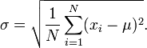
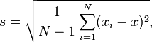

Standard Deviation Calculator
Please provide numbers separated by commas to calculate the standard deviation, variance, mean, sum, and margin of error.
Standard deviation in statistics, typically denoted by σ, is a measure of variation or dispersion (refers to a distribution's extent of stretching or squeezing) between values in a set of data. The lower the standard deviation, the closer the data points tend to be to the mean (or expected value), μ. Conversely, a higher standard deviation indicates a wider range of values. Similar to other mathematical and statistical concepts, there are many different situations in which standard deviation can be used, and thus many different equations. In addition to expressing population variability, the standard deviation is also often used to measure statistical results such as the margin of error. When used in this manner, standard deviation is often called the standard error of the mean, or standard error of the estimate with regard to a mean. The calculator above computes population standard deviation and sample standard deviation, as well as confidence interval approximations.
Population Standard Deviation
The population standard deviation, the standard definition of σ, is used when an entire population can be measured, and is the square root of the variance of a given data set. In cases where every member of a population can be sampled, the following equation can be used to find the standard deviation of the entire population:

| Where
xi is an individual value μ is the mean/expected value N is the total number of values |
For those unfamiliar with summation notation, the equation above may seem daunting, but when addressed through its individual components, this summation is not particularly complicated. The i=1 in the summation indicates the starting index, i.e. for the data set 1, 3, 4, 7, 8, i=1 would be 1, i=2 would be 3, and so on. Hence the summation notation simply means to perform the operation of (xi - μ)2 on each value through N, which in this case is 5 since there are 5 values in this data set.
EX: μ = (1+3+4+7+8) / 5 = 4.6
σ = √[(1 - 4.6)2 + (3 - 4.6)2 + ... + (8 - 4.6)2)]/5
σ = √(12.96 + 2.56 + 0.36 + 5.76 + 11.56)/5 = 2.577
Sample Standard Deviation
In many cases, it is not possible to sample every member within a population, requiring that the above equation be modified so that the standard deviation can be measured through a random sample of the population being studied. A common estimator for σ is the sample standard deviation, typically denoted by s. It is worth noting that there exist many different equations for calculating sample standard deviation since, unlike sample mean, sample standard deviation does not have any single estimator that is unbiased, efficient, and has a maximum likelihood. The equation provided below is the "corrected sample standard deviation." It is a corrected version of the equation obtained from modifying the population standard deviation equation by using the sample size as the size of the population, which removes some of the bias in the equation. Unbiased estimation of standard deviation, however, is highly involved and varies depending on the distribution. As such, the "corrected sample standard deviation" is the most commonly used estimator for population standard deviation, and is generally referred to as simply the "sample standard deviation." It is a much better estimate than its uncorrected version, but still has a significant bias for small sample sizes (N

| Where
xi is one sample value x̄ is the sample mean N is the sample size |
Refer to the "Population Standard Deviation" section for an example of how to work with summations. The equation is essentially the same excepting the N-1 term in the corrected sample deviation equation, and the use of sample values.
Applications of Standard Deviation
Standard deviation is widely used in experimental and industrial settings to test models against real-world data. An example of this in industrial applications is quality control for some products. Standard deviation can be used to calculate a minimum and maximum value within which some aspect of the product should fall some high percentage of the time. In cases where values fall outside the calculated range, it may be necessary to make changes to the production process to ensure quality control.
Standard deviation is also used in weather to determine differences in regional climate. Imagine two cities, one on the coast and one deep inland, that have the same mean temperature of 75°F. While this may prompt the belief that the temperatures of these two cities are virtually the same, the reality could be masked if only the mean is addressed and the standard deviation ignored. Coastal cities tend to have far more stable temperatures due to regulation by large bodies of water, since water has a higher heat capacity than land; essentially, this makes water far less susceptible to changes in temperature, and coastal areas remain warmer in winter, and cooler in summer due to the amount of energy required to change the temperature of the water. Hence, while the coastal city may have temperature ranges between 60°F and 85°F over a given period of time to result in a mean of 75°F, an inland city could have temperatures ranging from 30°F to 110°F to result in the same mean.
Another area in which standard deviation is largely used is finance, where it is often used to measure the associated risk in price fluctuations of some asset or portfolio of assets. The use of standard deviation in these cases provides an estimate of the uncertainty of future returns on a given investment. For example, in comparing stock A that has an average return of 7% with a standard deviation of 10% against stock B, that has the same average return but a standard deviation of 50%, the first stock would clearly be the safer option, since the standard deviation of stock B is significantly larger, for the exact same return. That is not to say that stock A is definitively a better investment option in this scenario, since standard deviation can skew the mean in either direction. While Stock A has a higher probability of an average return closer to 7%, Stock B can potentially provide a significantly larger return (or loss).
These are only a few examples of how one might use standard deviation, but many more exist. Generally, calculating standard deviation is valuable any time it is desired to know how far from the mean a typical value from a distribution can be.